DFMPro は、解析対象のパーツのすべての面を、自動的に Core and Cavity、Cavity and Cavity、Side Action、Others の各グループに分類します。
典型的なケースでは、いくつかの面を core から cavity へ、cavity から cavity へ、など移動する必要があります。Edit Mold Wall Classification 機能を使用すると、このような面をあるグループから別のグループへ移動できます。
Entity Selection グループボックスで Edit Classification of Mold Faces チェックボックスを選択して解析を実行すると、Edit Mold Wall Classification グループボックスが表示されます。
DFMPro は、すべてのコンポーネント面を自動的に Core and Cavity、Cavity and Cavity、Side Action (1, 2, 3…)、および others に分類します。
注:
解析後、定義した Secondary の抜き方向の数は、Edit Mold Classification グループボックス内で同数の Side Actions（1, 2, 3…）として分類されます。
Primary および Secondary の抜き方向を定義した後、Core and Cavity、Cavity and Cavity、または Side Actions の分類オプションに該当する面が存在しない場合、その分類はグレーアウトされます。さらに、Edit Mold Classification グループボックス内にグループは作成されません。
DFMPro では、面を定義して、あるグループから別のグループへ移動できます。
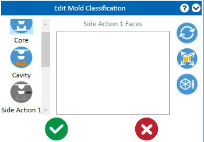
Groups の下にある対応する面数を確認するには、それぞれの Core、Cavity、または Side Actions ボタンをクリックします。
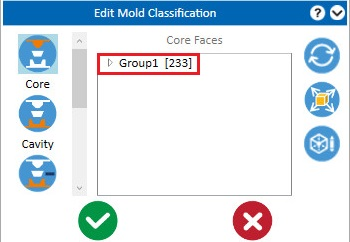
注:
Reset ボタンをクリックすると、変更をデフォルト分類に戻します。Reset ボタンが更新するのは、現在のセッションで適用された変更のみです。
Core, Cavity, Side Actions などの分類オプションをクリックすると、該当する面グループと抜き方向がグラフィック領域に表示されます。
DFMPro では、Core and Cavity または Cavity and Cavity のオプション間でのみ、利用可能なグループ/面を入れ替えることができます。
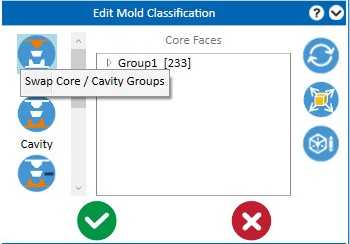
注:
Thermoforming モジュールでは、Core/Cavity の入れ替え機能はサポートされません。
Add / Remove Faces through Graphical Selection オプションを使用すると、グラフィック領域から目的の面を選択し、選択した特定の Group に移動できます。
Add / Remove Faces through the Graphical Selection オプションをクリックし、コンテキストメニューから目的の Group オプションを選択します。
選択したグループに面が存在する場合、それらの面がグラフィック領域でハイライト表示されます。
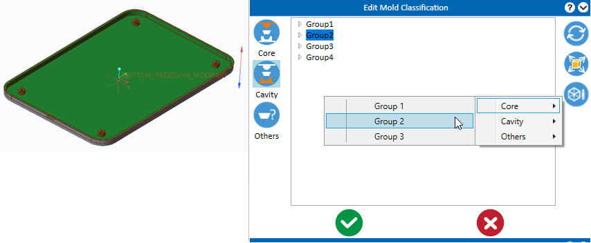
この操作により、ダイアログボックス内の OK ボタンが有効になります。
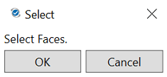
OK ボタンをクリックして、選択した面を選択中の Group に移動します。
DFMPro では、グループ/面をある分類オプションから別の分類オプションへ移動できます。
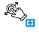
を使用し、Ctrl ボタンで目的の面を選択して ドラッグ＆ドロップ でメインのグループへ移動します。サブグループ名を変更するには、目的のサブグループをダブルクリックするか、キーボードの F2 ボタンを押してから、既存の名前を置き換える名前を入力します。キーボードの Enter ボタンを押して新しい名前を保存します。
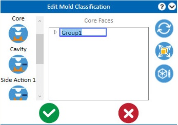
すべての抜き方向をグラフィック領域に表示するには、 Show all pulling directions ボタンをクリックします。
ユーザーは、Mold Wall 面の失敗インスタンスをズームして確認できます。
利用可能な分類に基づいて DFMPro 解析を続行するには、OK ボタンをクリックします。
Mold Wall Classification は、次に関連するさまざまなルールで使用されます:
注:
パーツが変更され、ユーザーが古い DFMPro 結果をインポートした場合、古い DFMPro 結果に保存されている抜き方向および edit mold wall classification 情報が、解析の再実行時に使用されます。
デフォルトでは Core and Cavity の Mold Types が選択され、金型面は Core and Cavity として分類されます。
特定のモデルでは、金型面が Cavity のみに属する場合があります。そのようなモデル向けに Cavity and Cavity のオプションが提供され、金型面は Cavity 1 と Cavity 2 に分類されます。
Minimum Draft Angle ルールでは、Cavity and Cavity Mold Type が選択されている場合、キャビティのドラフト角の推奨値が適用されます。
選択した Mold Type に基づき、Casting、Die Casting、Injection Molding の各プロセスは Core and Cavity または Cavity and Cavity に分類されます。製造要件に応じて、該当するラジオボタンを選択してください。
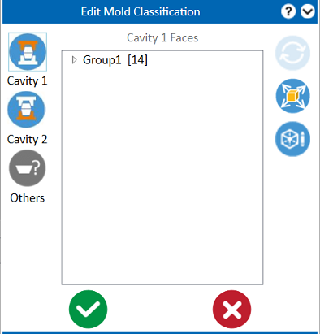
金型面の選択に基づき、Thermoforming プロセスは Male Mold と Female Mold に分類されます。製造要件に応じて、該当するラジオボタンを選択してください。
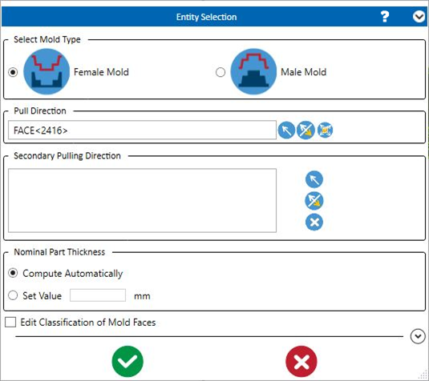
Male Mold |
Female Mold |
|
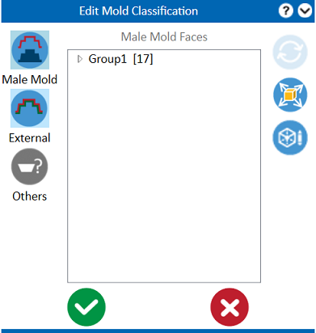 |
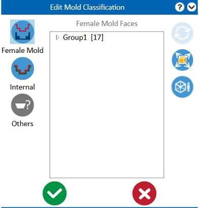 |
金型面の選択に基づき、Vacuum Infusion プロセスは Internal と External に分類されます。
金型面の選択に基づき、Sand Casting プロセスは Cope と Drag に分類されます。
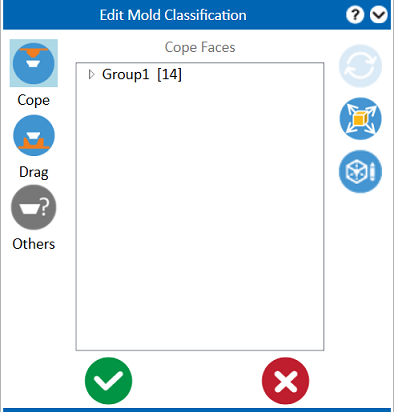
複雑なパーツでは、ユーザーが複数の抜き方向と、以前に実施した mold wall classification を指定することがよくあります。その場合、*.dfmr をインポートして解析を再実行することで、入力した抜き方向と mold wall classification を記憶させることができます。
同様に、最初に結果を保存してエクスポートし、2 回目の実行で結果をインポートして解析を再実行すると、DFMPro は以前入力した抜き方向を記憶します。
一度解析を実行すると、DFMPro はユーザーが入力したデータを記憶します。再実行時には、ユーザーはデータを再入力する必要がありません。
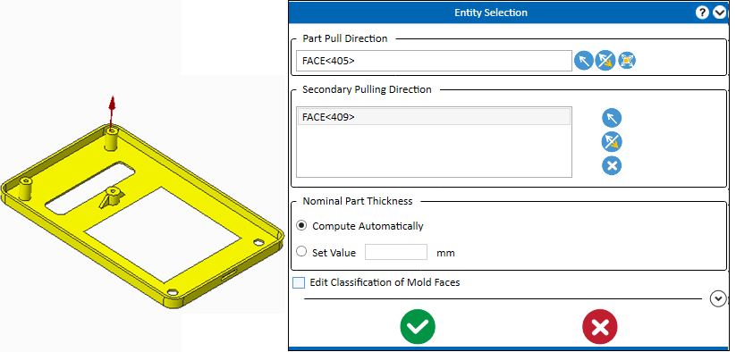
新しい解析を実行する際に、以前に抜き方向として選択されていた面を変更または削除すると、DFMPro はその変更（抜き方向の変更）を赤色でハイライトしてユーザーに通知します。このような場合、ユーザーが入力抜き方向を修正するまで Start Analysis ボタンは無効になります。
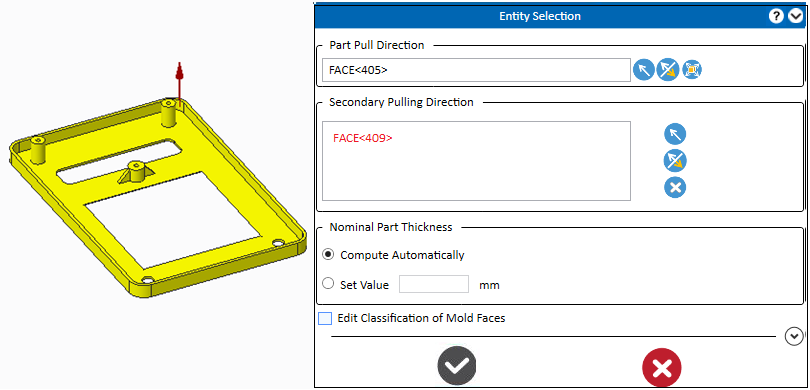
注:
モデルが変更され、ユーザーが以前にエクスポートした結果をインポートすると、背景が黄色で表示されます。